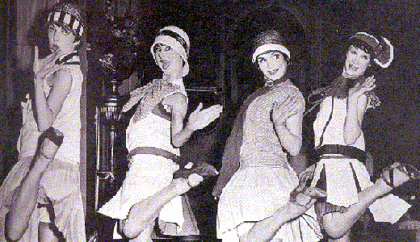

Here are some flappers:
Friday, September the 16th, 2011
back to: title, date or indexes
Here are some flappers:

You can read about one particular flapper, and a criminal flapper at that, in my cupboard this week at The Dabbler. The flapper is accompanied in my tale by a chump (unillustrated).
Ray Bradbury wrote a famous collection of short stories called The Illustrated Man (1951), made into a film (1969) starring Rod Steiger (1925–2002). Were Mr Steiger still with us, I think I would write to him suggesting he play a character called The Unillustrated Chump. This would not be an adaptation of The Chump And The Flapper, the story in today's Dabbler, but a wholly different work, based on the boiling frustrations of a chump who, try as he might, cannot get his likeness depicted by a single illustrator. Mr Steiger did boiling frustration very well, and though he may have had difficulty playing a chump—for he was the most unchumpish of men—his training in the Method would no doubt have stood him in good stead. Alas, it is not to be.